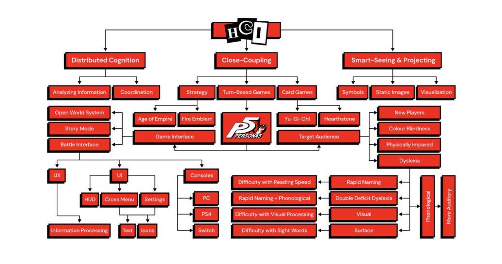
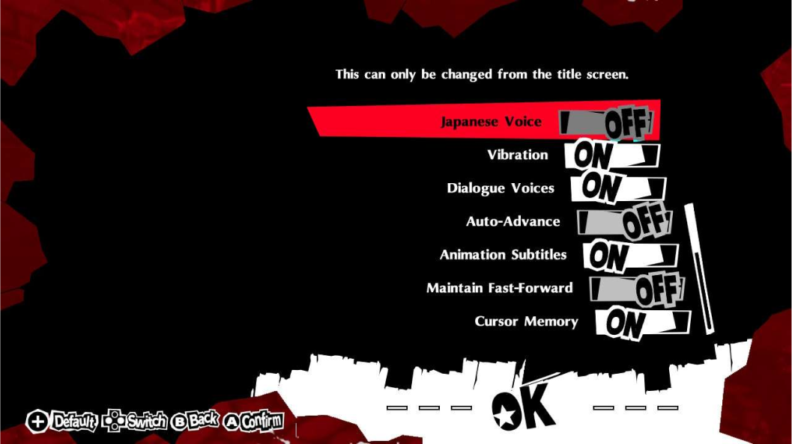
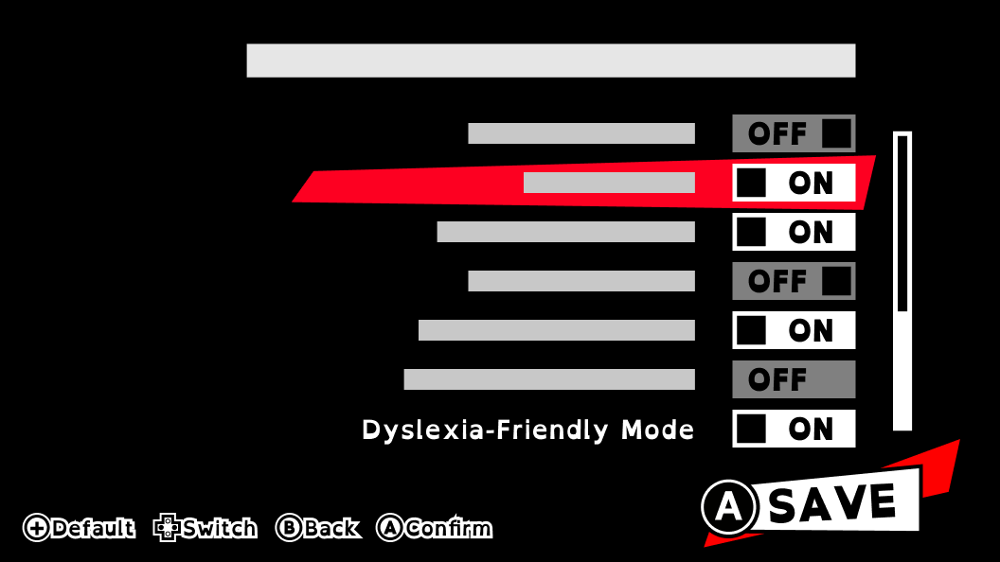
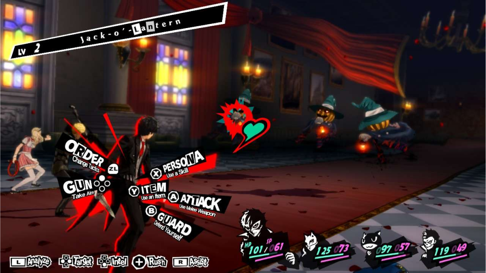
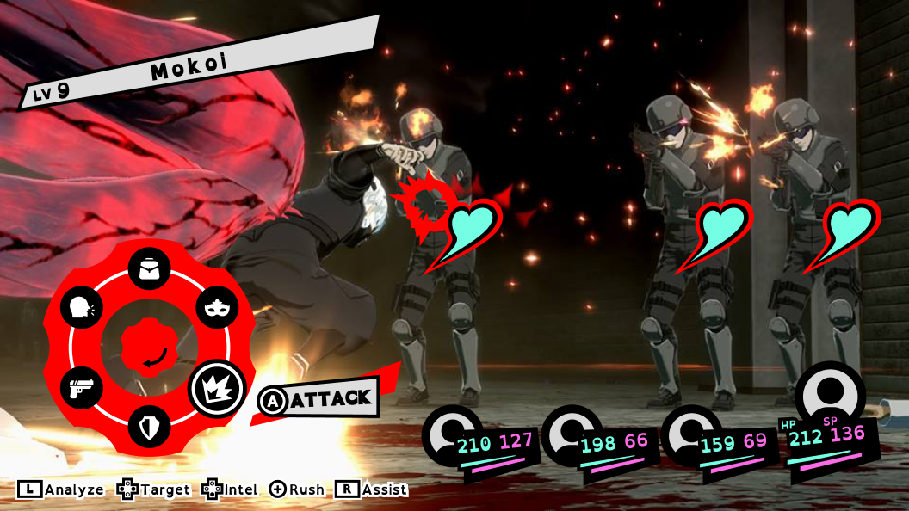

What did our project entail, and how did my team and I contribute?
- Our investigation delved into the role of smart-seeing & projecting, distributed cognition, and
close-coupling in shaping users' experiences across diverse gaming contexts and settings.
- Our research focused on the practical application of smart-seeing & projecting, distributed
cognition, and close-coupling within a real-life activity, proposing solutions through HCI design
guidelines.
- A preliminary Design Aid Device (DeDe) was formulated, integrating concrete evidence to effectively
address the effects of smart-seeing & projecting, distributed cognition, and close-coupling on the
field of HCI.
How might we redesign Persona 5's combat screen to enhance the gaming experience for individuals with
dyslexia, while addressing issues of clutter, font legibility, and thematic color scheme, in order to
improve accessibility and user control?
1. Definitions
-
Distributed Cognition
is how information is processed between a user, other users, and within
the
systems they are using. In the case of Persona 5, it is essentially only the communication
between
the player and the game world.
-
Smart-Seeing & Projection
is when users look at external representations to project them as
images
and draw an understanding using internal processes. In Persona 5, the game does not showcase the
enemy's health numbers but instead, uses a health bar in the shape of a heart to give the
players an
estimate of how much health the enemy has left.
-
Close-Coupling
is a term for the interaction and coordination between the user and
computer where
the user demonstrates their intelligence through reasoning and the changing of information, and
how
thinking is shaped by interaction with active systems. In Persona 5 Royal, how the texts are
presented in the cross menu can influence the user's ability to react to the system.
2. Research
Dyslexia is a learning disability that affects a person's ability to read (Dorwart, n.d). It is the most
common learning disability and the most common reason for difficulties in reading, writing, and spelling
(Understood Team, 2022). Dyslexia often makes it harder for individuals to split words into their
component sounds, affecting decoding skills in reading and spelling. Children with dyslexia are more
affected by letters and digits compared to symbol strings (Ziegler et al., 2010).
Dyslexia's Style Guide:
- Use san-serif fonts so that letters appear less crowded
- Increase character spacing, inter-word spacing, and spacing between lines
- Use bold for emphasis instead of underline or italics as they cause crowding
- Avoid using uppercase and capital letters
- Avoid background patterns or pictures and distracting surroundings
- Use sufficient contrast between text and background, preferably dark coloured text on light (not
white as it might be too dazzling) background. Use cream or soft pastel colour
- Use white space to remove clutter near text and group-related content
Maria Redka, a web designer from InstantShift (Redka, 2019), highlighted some other UX and UI practices
that are helpful in addition to the above:
- Minimize text length
- Use icons when possible
- Allow customization
- Use autofill and smart writing algorithms
Design Objective
Our design objective is to increase the accessibility of Persona 5's battle interface for dyslexic
people by reducing the screen clutter to enhance the quality of control between the user and the
system.
Research Question
What features can be added to Persona 5's combat screen to improve the gaming experience for people with
dyslexia?
Individual Research Questions
- How does Persona 5's battle interface affect smart-seeing & projecting, close-coupling, and
distributed cognition in dyslexic people?
- What are some style guides and principles that help ensure that written materials consider the
difficulties experienced by dyslexic people?
- How can we improve Persona 5's battle interface so that dyslexic people can have a better experience
in playing the game? What are the solutions that can help facilitate their ease of reading?
- What are some games that have dyslexia-friendly interfaces?
3. Mindmap

4. Proposed Solution
Strategies
- Redesigning the cross menu.
- Enhancing typeface legibility.
- Optimal colour selection for button-glyphs and HUD elements.
- Reinforcing text with icons to enhance smart-seeing & projecting.
- Activation through Dyslexia-Friendly Mode button in settings.
Implementation Steps
- Adding an Extra Button:
- Introducing a Dyslexia-Friendly Mode button for users to enable.
- Redesigned Combat Screen:
- Upon activation, the new combat screen interface is presented.
- Pie Menu Design:
- Transforming the cross menu into a more efficient pie menu.
- Using the Nintendo Switch's left joystick for navigation between icons.
- Confirming choices with the A button.
- Enhanced usability for dyslexic users through icons and reduced text clutter.
- Typeface and Color Enhancements:
- Replacing ransom-note font with OpenDyslexic for faster information processing.
- Transitioning from light text on dark backgrounds to dark text on a white background to
improve legibility.
Settings Interface
The presence of irregular shapes on the game settings page poses challenges for dyslexic people
in effectively distinguishing between each option.


We modified the switch button's shape to a consistent rectangle, enhancing its visual
organization. Additionally, we introduced a dedicated 'Dyslexia-Friendly Mode' button to
facilitate the activation of the dyslexic-friendly setting for the battle screen interface.
Battle Screen Interface
The chosen typeface within the cross menu is challenging for individuals with dyslexia, impeding
readability. The button-glyphs are confusing for beginner players.


We opted for a pie menu implementation that exclusively employs the left joystick of the Nintendo
Switch for icon navigation, with confirmation facilitated through the A button. This approach
minimizes target seeking time by capitalizing on icons and mitigating text clutter.
5. Resources
- Dorwart, L. (n.d.). The Types of Dyslexia. Retrieved from https://www.verywellhealth.com/types-of-dyslexia-5214423
- Redka, A. (2019, April 5). UI/UX design for users with dyslexia. InstantShift. Retrieved November 23, 2022, from http://www.instantshift.com/2019/04/05/ui-ux-design-for-dyslexia-users/
- Team Understood. (2022, May 4). What is Dyslexia. Understood. Retrieved November 23, 2022, from https://www.understood.org/en/articles/what-is-dyslexia
- Ziegler, J. C., Grainger, J., Dufau, S., & Pech-Georgel, C. (2010). Rapid processing of letters, digits and symbols: What purely visual-attentional deficit in developmental dyslexia? Developmental Science. Retrieved November 25, 2022, from https://pubmed.ncbi.nlm.nih.gov/20590718/